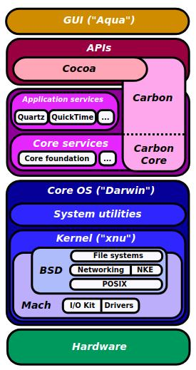
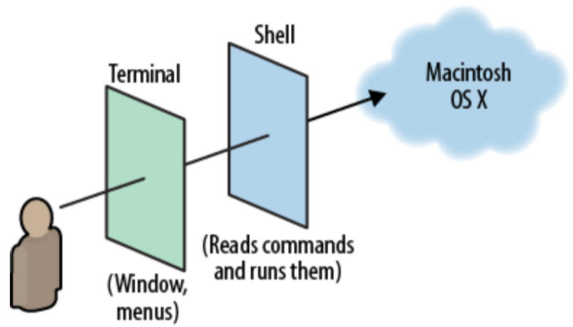

Opowieść o obsłudze komendami tekstowymi z minimalną ilością żargonu technicznego
System operacyjny macOS komputerów firmy Apple należy do podrodziny BSD rodziny Unix. Składa się z warstw:

Terminal i naciśnięciu klawisza Enter
ukaże się okno wirtualnego dalekopisu. To wirtualne urządzenie pozwala powłoce jądra lokalnego lub zdalnego systemu na przyjmowanie napisanych
po znaku zachęty (przeważnie znaku dolara $) poleceń.
Powłoka jądra (domyślnie Bash)
to język, który pozwala łączyć polecenia w algorytmiczne instrukcje i tłumaczy je w locie na wywołaia systemowe jądra.
Plik z możliwością wykonania zapisanymi w nim instrukcjami powłoki nazywa się skryptem.
$ echo $SHELL
/bin/bash
Wpisując słowo tty i naciskając Enter:
$ tty
/dev/ttys000
Terminal z którego właśnie korzystasz jest plikem o nazwie ttys000.
Znajduje się on w katalogu urządzeń dev a ten zaś w katalogu korzeniu /.
EOF.
Zapytajmy o typ pliku ttys000:
$ file /dev/ttys000
/dev/ttys000: character special (16/0)file poinformowało, że plik, który reprezentuje terminal jest specjalnym plikiem znakowym.
Istnieją też specjalne pliki blokowe urządzeń (np. pamięci masowe HDD lub SSD zanim prześlą dane najpierw buforują je w bloki)
tty też jest plikiem ale wykonywalnym i zwykłym, czyli programem.
Znajdźmy jego połżenie poleceniem which:
$ which tty
/usr/bin/tty$ file /usr/bin/tty
/usr/bin/tty: Mach-O 64-bit executable x86_64tty ma format 64-bitowego pliku wykonywalnego na maszynach o architekturze procesora x86_64 pod kontrolą jądra Mach.
Sprawdźmy czy rzeczywiście takim komputerem dysponujemy:
$ machine
x86_64h$ uname
Darwin
Każde polecenie ma swoją systemową stronę pomocy wywoływaną poleceniem man np.:
$ man fileq zamyka program.
$ ps aux | wc -l
362$ htop -tKażdy użytkownik ma do danego pliku przydzielone albo odebrane niezależnie trzy kolejne prawa:
---, --x, -w-, -wx, r--, r-x, rw-, rwx000, 001, 010, 011, 100, 101, 110, 111 0, 1, 2, 3, 4, 5, 6, 7Użytkownik tworząc plik staje się jego właścicielem i ustala nad nim prawa, które można wyrazić trzycyfrową liczbą ósemkową:
Każdy użytkownik należy do co najmniej jednej grupy i dokładnie jedna z nich jest dla niego podstawowa.
Użytkownik jest rozpoznawany w systemie przez liczbowy identyfikator uid skojarzony z loginem,
podobnie jego grupa podstawowa identyfikatorem gid a pozostałe grupy są na liście identyfikatora
groups:
$ id
uid=501(adal) gid=20(staff) groups=20(staff),12(everyone),61(localaccounts),79(_appserverusr),80(admin),81(_appserveradm),
98(_lpadmin),501(access_bpf),701(com.apple.sharepoint.group.1),33(_appstore),100(_lpoperator),204(_developer),
250(_analyticsusers),395(com.apple.access_ftp),398(com.apple.access_screensharing),399(com.apple.access_ssh)Stwórzmy pusty plik:
$ > myfile$ stat -x myfile
File: "myfile"
Size: 0 FileType: Regular File
Mode: (0644/-rw-r--r--) Uid: ( 501/ adal) Gid: ( 20/ staff)
Device: 1,4 Inode: 10975291 Links: 1
Access: Tue Jun 11 10:18:38 2019
Modify: Tue Jun 11 10:18:38 2019
Change: Tue Jun 11 10:18:38 2019Size: Rozmiar pliku wynosi zero - nie przydzielono mu jeszcze żadnego obszaru na dane w pamięci masowej.
FileType: Plik zwykły.
Uid: Identyfikator właściciela pliku to 501 a jego login to adal.
Gid: Identyfikator grupy dla której ten plik ma specjalne prawa to 20 o nazwie staff.
Mode: Dwoma sposobami podano że włściciel ma prawo czytania i pisania,
a grupa i pozostali użytkownicy tylko czytania.
Pierwsze znaki 0 w sekwencji liczbowej oraz minus w sekwencji literowej oznaczją że jest to plik zwykły.
Device: Liczba 1 to rzeczywisty numer urządzenia a liczba 4 to jego logicznie wydzielona część,
która przechwuje plik myfile.
Tu: 1 - Urządzenie SSD, 4 - Partycja na urządzeniu SSD.
Inode: Numer identyfiacyjny uzyskamy też taką komendą:
$ ls -i
10975291 myfileLinks: Plik ma tylko jedną nazwę - myfile
Jeśli wykonamy polecenie:
$ ln myfile thesamefileAccess: Podaje datę ostatniego odczytania danych z pliku.
Modify: Podaje datę ostatniej modyfikacji treści (dopisania lub nadpisania danych) pliku.
Change: Podaje datę ostatniej zmiany praw pliku.
Gdybyśmy chcieli otrzymać pełne uprawnienia do wszystkich plików musielibyśmy się zalogować jako administrator systemu poleceniem:
$ su -l root
Password:/var/root a powłoka jądra zgłasza gotowość
wykonania poleceń znakiem hash #. Na tym koncie nieświadomie można uszkodzić system - lepej się wylogujmy:
# exit
$
Polecenie su prównuje przekształcenie podanego hasła z napisem umieszczonym w pliku, którego jako użytkownik zwykły nie możemy czytać.
Prawo setuid (s zamiast pierwszego x) pozwala wykonać polecenie su jak gdyby wykonywał go administrator
a przecież stajemy się nim dopiero po wykonaniu tego polecenia
$ ls -l `which su`
-rwsr-xr-x 1 root wheel 25488 May 4 09:03 /usr/bin/su
Polecenie write ma uprawnienia dla grupy tty my jednak do niej nie należymy,
ale ponieważ plik ma ustawione prawo setgid (s zamiast drugiego x)
to jesteśmy do niej przydzieleni tylko na czas wykonania tego polecenia.
$ ls -l `which write`
-r-xr-sr-x 1 root tty 23936 May 4 09:02 /usr/bin/write
Bit lepki sticky bit (t zamiast ostatniego x) ustawiany dla katalogu czyni go współdzielonym aby użytkownicy
mogli tworzyć w nim katalogi i pliki ale aby nie mogli sobie wzajemnie ich usuwać. Taką własność ma katalog /var/tmp:
$ ls -ld /var/tmp
drwxrwxrwt 5 root wheel 160 Jun 13 10:00 /var/tmpCzym innym jest wielkość pliku a czym innym wielkość obszaru zajmowanego przez ten plik na nośniku danych.
$ ls -sl myfile
0 -rw-r--r-- 1 adal staff 0 Jun 15 23:23 myfile$ echo -n a > myfile$ ls -sl myfile
8 -rw-r--r-- 1 adal staff 1 Jun 15 23:30 myfile$ for _ in {1..4095}; do echo -n a >> myfile ; done
$ ls -sl myfile
8 -rw-r--r-- 1 adal staff 4096 Jun 15 23:53 myfile$ echo -n a >> myfile
$ ls -sl myfile
16 -rw-r--r-- 1 adal staff 4097 Jun 15 23:57 myfiledf.
$ /usr/bin/ruby -e "$(curl -fsSL https://raw.githubusercontent.com/Homebrew/install/master/install)"htop:
$ brew search htop$ brew info htop$ brew install htop$ brew uninstall htop$ brew udate$ brew upgradeNajnowszym językiem do tworzenia programów w systemie macOS i jego odmian jak: iOS, watchOS, tvOS, iPadOS oraz szkieletów do budowania serwisów internetowych jak Kitura (od IBM) lub Vapor jest Swift. Język Swift jest kompilowany: (czyli kod programu napisany przez programistę w całości musi być przetłumaczony na język maszynowy, znim prawidłowo zacznie go wykonywać procesor)
Podstawowym środowiskiem rozwoju oprogramowania dla tego języka jest Xcode pracujący w warstwie Aqua. Inny sposób to kompilacja z linii komend. Poprawnym programem będzie nawet skompilowany z pustego pliku.
$ touch myprogram.swift
$ swiftc -v myprogram.swift$ ./myprogram
$Kilka zadań algorytmicznych, które rozwiązałem w języku Swift (na podstawie dostępnego fragmentu książki).
Rozwiązania można przetestować w serwisie kompilującym Swifta online. Na karcie main.swift wklejamy kod, gdzie w pierwszej linijce dołączamy standardową bibliotekę Swiftaimport Foundation).
Dane wejściowe zapisujemy na karcie STDIN. Wykonanie programu następuje po kliknięciu pola Execute.
Napisz program, który oblicza sumę wszystkich liczb naturalnych podzielnych przez 3 lub 5 aż do podanej wartości granicznej wprowadzonej przez użytkownika:
print("InPut(Int):", terminator: " ")
guard let upNum = Int(readLine()!.trimmingCharacters(in: .whitespacesAndNewlines))
else { exit(EXIT_FAILURE) }
let sum = (1...upNum).filter {$0 % 3 == 0 || $0 % 5 == 0} .reduce(0,+)
print(sum)
extension String: Error {}
let p = UInt(readLine()!)!
let q = UInt(readLine()!)!
func gcd(_ a: UInt, _ b: UInt) throws -> UInt {
if a == 0 && b == 0 { throw "Both numbers are ZERO" }
return b == 0 ? a : try gcd(b, a % b)
}
do {
try print(gcd(p,q))
} catch let Err {
print("ERROR: \(Err)")
}
let p = UInt(readLine()!)!
let q = UInt(readLine()!)!
func gcd(_ m: UInt, _ n: UInt) -> UInt {
var (a, b) = (m, n)
while b != 0 {
(a, b) = (b, a % b)
}
return a
}
print(gcd(p,q))
let p = UInt(readLine()!)!
let q = UInt(readLine()!)!
let gcd :(UInt, UInt) -> UInt = { sequence(first: ($0, $1), next: {$0.1 != 0 ? ($0.1, $0.0 % $0.1) : nil})
.suffix(1).first!.0
}
print(gcd(p,q))
extension Int {
var isPrime: Bool {
get {
guard self > 3 else {return self > 1}
guard self % 2 != 0 && self % 3 != 0 else {return false}
for i in stride(from: 5, through: Int(Double(self).squareRoot()) + 1, by: 6) {
if self % i == 0 || self % (i + 2) == 0 {return false}
}
return true
}}}
let n = UInt(readLine()!)!
print(n.isPrime)